ニフレルに行って来た！ [梅吉]
梅吉さん熟睡です。
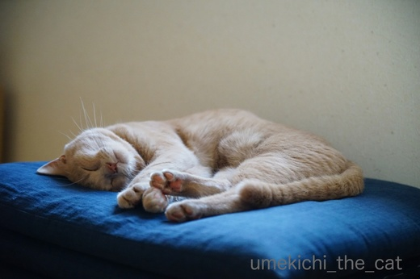
梅吉さんにはぐっすりお休みしてもらって
海遊館がプロデュースしているニフレルに行って来た話題を。
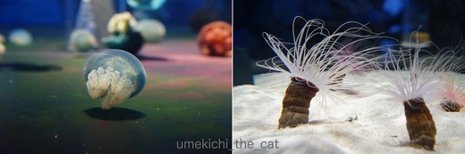
まずはイソギンチャクとクラゲがお出迎え。
この水槽が凸レンズのようになっていてじっと見ていると頭がクラクラしそうでした。
そういうの弱い方は気をつけたほうが良いかも。
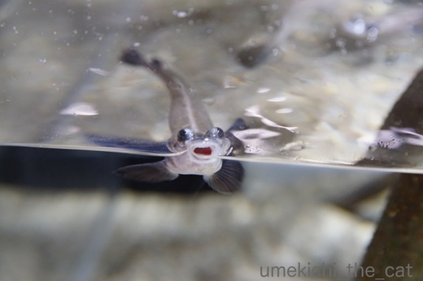
お口ぱかー。この子のお名前忘れちゃいました。
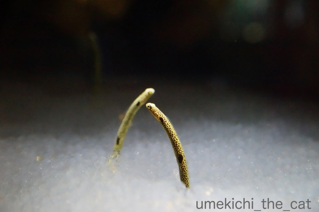
チンアナゴ。チンアナゴ可愛いですよね〜。
飼いたいけど梅吉が水槽に手を突っ込むのは間違いないので却下ww
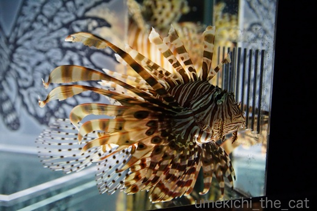
ハナミノカサゴ。華麗なお姿です。
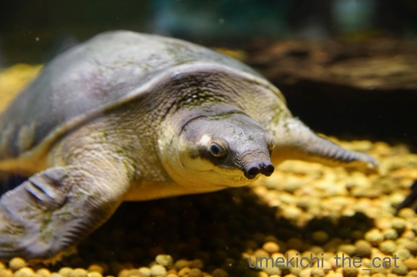
スッポンモドキ。鼻が長い・・・・
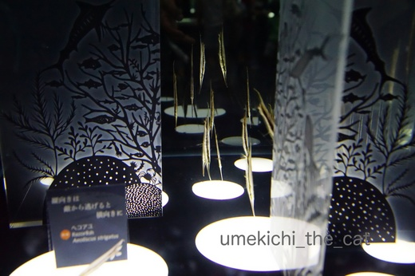
ヘコアユ。みんな縦になっています。
敵から逃げるときは横向きに泳ぐみたいですよ。
ニフレルは小さな水槽がたくさん並んでいて飼育している生き物の数も少ないのですが
この水槽のように一工夫してあり楽しく見られるようになっています。
（ハナミノカサゴの水槽にも絵が書いてありましたよね。）
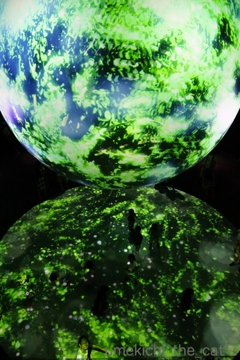
これも飽きさせない工夫の１つかな。
球体にプロジェクションマッピングを投影してそれがフロアに映っています。
フロアに見える黒い点々は子供達。きゃっきゃとはしゃいでいました。
梅吉みたいだなー。
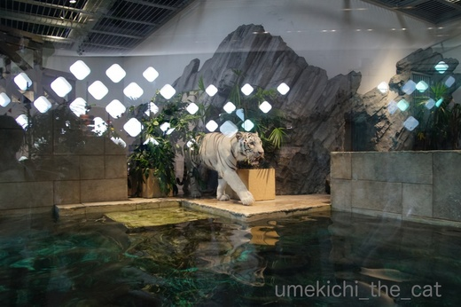
この施設の目玉はこの方。
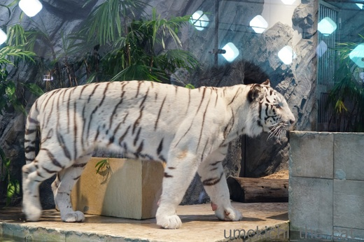
ホワイトタイガー。
のっしのっしと闊歩（というか落ち着かなげにウロウロ）していましたよ。
最近は大きな展示スペースの動物園が多いのでこのホワイトタイガーのスペースは
狭くてちょっとかわいそうでした・・・・・
「きっと大きな運動場があるんだよね」「梅吉の方が100倍幸せだよね」
などど話しながら移動。
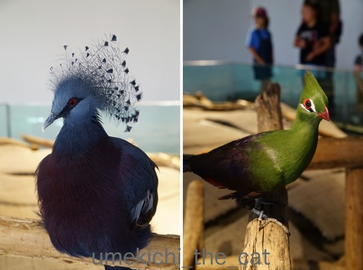
最後は美しい冠のオウギバトと緑の羽根が印象的なギニアエボシドリに見送られておしまい。
で、実はこの日のメインはニフレルではなくこちら。
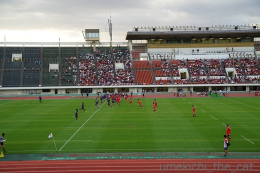
ラグビーシーズン始まりました。
企業チームなので応援席は妙な一体感があります。
この日は残念ながら負けちゃいました・・・（弱いのよww)
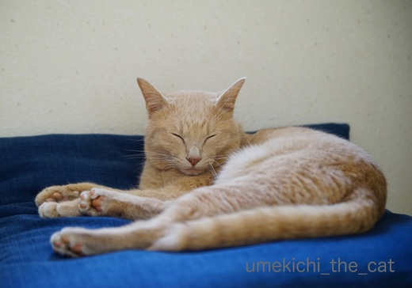
あ、梅吉さんお目覚めのようですね。
これから新しいカシャぶんが届く予定。そう、また新しいの買いましたよ( ；∀；)
 ↑ガブッと一押し↑
↑ガブッと一押し↑
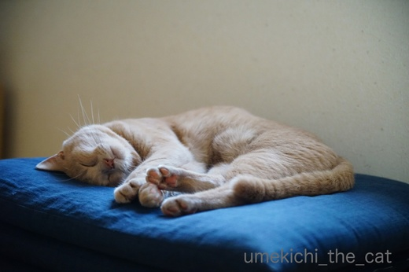
梅吉さんにはぐっすりお休みしてもらって
海遊館がプロデュースしているニフレルに行って来た話題を。
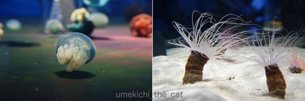
まずはイソギンチャクとクラゲがお出迎え。
この水槽が凸レンズのようになっていてじっと見ていると頭がクラクラしそうでした。
そういうの弱い方は気をつけたほうが良いかも。
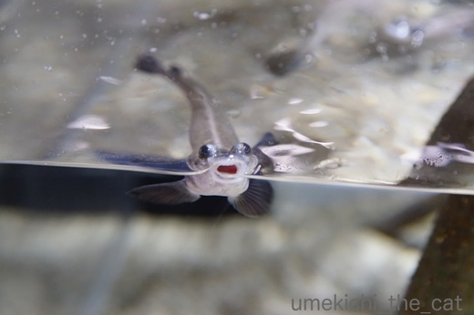
お口ぱかー。この子のお名前忘れちゃいました。
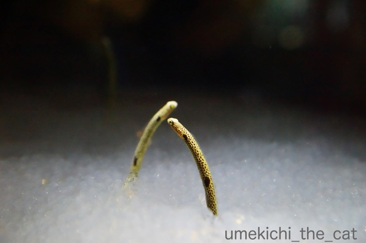
チンアナゴ。チンアナゴ可愛いですよね〜。
飼いたいけど梅吉が水槽に手を突っ込むのは間違いないので却下ww
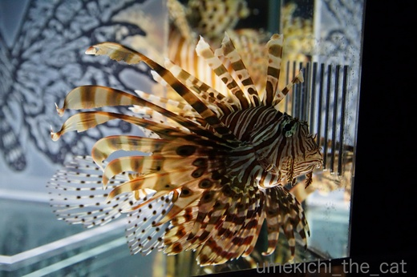
ハナミノカサゴ。華麗なお姿です。
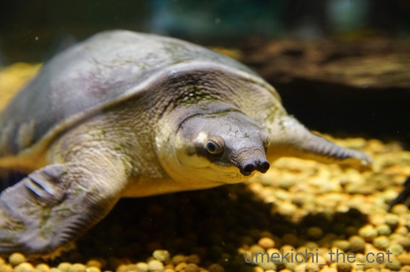
スッポンモドキ。鼻が長い・・・・
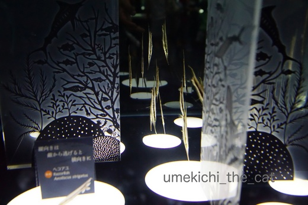
ヘコアユ。みんな縦になっています。
敵から逃げるときは横向きに泳ぐみたいですよ。
ニフレルは小さな水槽がたくさん並んでいて飼育している生き物の数も少ないのですが
この水槽のように一工夫してあり楽しく見られるようになっています。
（ハナミノカサゴの水槽にも絵が書いてありましたよね。）
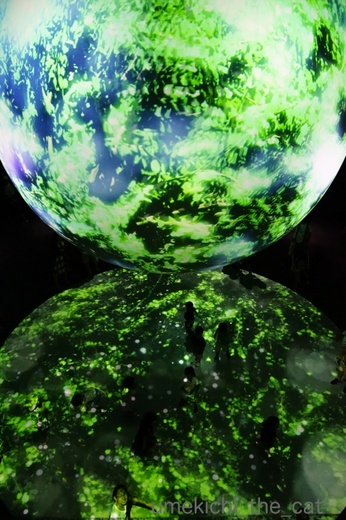
これも飽きさせない工夫の１つかな。
球体にプロジェクションマッピングを投影してそれがフロアに映っています。
フロアに見える黒い点々は子供達。きゃっきゃとはしゃいでいました。
梅吉みたいだなー。
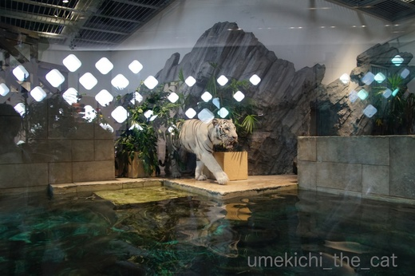
この施設の目玉はこの方。
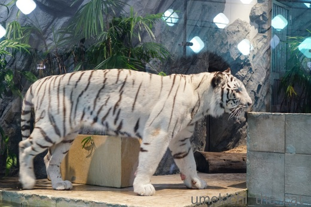
ホワイトタイガー。
のっしのっしと闊歩（というか落ち着かなげにウロウロ）していましたよ。
最近は大きな展示スペースの動物園が多いのでこのホワイトタイガーのスペースは
狭くてちょっとかわいそうでした・・・・・
「きっと大きな運動場があるんだよね」「梅吉の方が100倍幸せだよね」
などど話しながら移動。
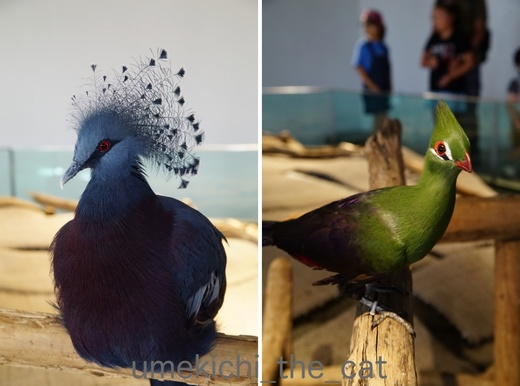
最後は美しい冠のオウギバトと緑の羽根が印象的なギニアエボシドリに見送られておしまい。
で、実はこの日のメインはニフレルではなくこちら。
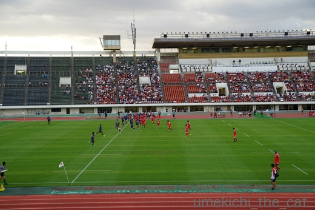
ラグビーシーズン始まりました。
企業チームなので応援席は妙な一体感があります。
この日は残念ながら負けちゃいました・・・（弱いのよww)
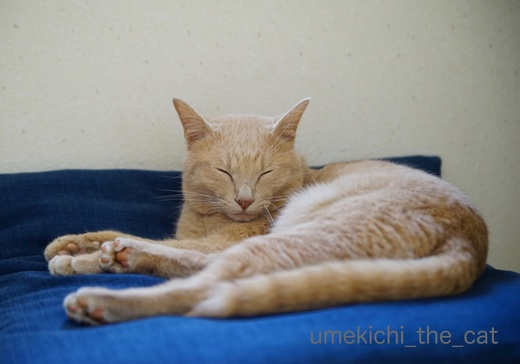
あ、梅吉さんお目覚めのようですね。
これから新しいカシャぶんが届く予定。そう、また新しいの買いましたよ( ；∀；)

カフェオレ色の梅吉

梅吉 2023年8月10日 永眠


梅吉と出会った譲渡会

犬猫の理由なき殺処分ゼロ
妄想広告
UMEKICHI 光

爆発的に早い！
時々攻撃的！
Thanks to Mr.Boss365
爆発的に早い！
時々攻撃的！
Thanks to Mr.Boss365

『ホワイトタイガー』本物（笑）
by kiki (2017-09-06 16:19)
ぐっすりお休みの梅吉さんも、絵になりますね＾＾
面白い生き物がいっぱい‥写真が綺麗ですね。
ニフレルって何？
ちょっと検索～なるほど。
ホワイトタイガー、本物？こんなオシャレな光景の中で幻想的に見えます。
ちょっと狭いかなぁ‥
きっと運動場はありますよね！＾＾
by sana (2017-09-06 16:26)
お口パカーの子かわいい。ご挨拶してる。
梅吉さんはちゃんとお留守番のご褒美がもらえるのね。優しいおかーさんだー。
by zombiekong (2017-09-06 16:28)
動物が狭い所で入れられているとなんだかいたたまれないですね～
by みぃにゃん (2017-09-06 18:37)
グッスリ寝ている梅吉さん♪
まだ寝ぼけ眼の寝起きの梅吉さん♪
幸せ間違いないです(*^_^*)
ホワイトタイガーも裏に大きな
運動場ばあると思いたいですよね！
by きぃ (2017-09-06 20:14)
梅吉さん
思い切り爆睡していますね！
流石ニャンコです(^^)
by ma2ma2 (2017-09-06 20:22)
ニフレル、何か都会的な感じのするところですね。
近所にはないです。こういうの。田舎なので(^-^;
梅吉さんの寝顔で、こちらも眠たくなりました(^^♪
by riverwalk (2017-09-06 20:38)
正面顔のお口ぱか～っの子、トビハゼさんかな？？
ホワイトタイガー近いですね！ 肉球見てみたいな～(*^▽^*)
我が家もかしゃブンは必ず1個在庫置いております。
by ゆきち (2017-09-06 20:42)
２０年前に行ったきりの万博記念公園、
近くにオシャレスポットができたのですね。
かなり惹かれます(*^O^*)梅吉様の寝姿にも！
by うっかりくま (2017-09-06 21:22)
ニフレル、面白そうな場所ですねぇ( ^ω^ )
チンアナゴはサイパンの海の良く潜るポイントにたくさんいて
近づくとさっと砂の中に潜るのが面白かったなぁ♪( ´▽｀)
梅吉さん、また新しいカシャぶんですって*\(^o^)/*
楽しみですねぇ=(^.^)=
by ニッキー (2017-09-06 21:23)
ぐっすり眠る梅吉さん、和みますね。^^)
フワフワと水中を舞うクラゲ、いいですよねー。
「お口ぱかー」のお魚はヨツメウオかな？トビハゼ？
う。。。自信アリマセン。^^;
by yes_hama (2017-09-06 21:42)
猫の寝姿を見るのが大好きです！
ま、それはそれとして、
「ニフレル」という、シャレのきいた名称の水族館（？）、
楽しそうですね。
そして、ラグビーですか。
おっ、梅吉君、おはよう（？）
by うめむす (2017-09-06 22:46)
スッポンモドキって初めて見ました！
面白い顔～((´∀｀))ｹﾗｹﾗ
私も水族館大好きです。
梅吉さんは、ニッコリ笑ってるみたいで福相ですね♪＾＾
by マーヤ (2017-09-07 00:31)
本物のトラさんですか？
屋外に居るより涼しそうだけど
確かに狭いですね＾＾；
by ぽちの輔 (2017-09-07 06:48)
ニフレル、楽しそうですね！
ホワイトタイガーも居るなんて！
たしかにちょっと狭そうな空間って感じちゃうね。
あおと同じ性格なら、このくらいのスペースでも良いのかもだけど・・・
梅吉君は間違いなく100倍 幸せ空間で暮らしてるよ～♪♪
by リュカ (2017-09-07 10:35)
お出掛け楽しんだんだね～。
お口ぱかーっの子、お目目も少し出てて可愛い♪
ホワイトタイガーのスペースは確かに広さが足りなさそう。
これだと暴れることも走ることも出来なさそうだし、切なくなっちゃう。
切なくさせてどうするんだ！！
スポーツはラグビーが好きなのですか？
ラグビーは観たことがないです～。
妙な一体感は同じものを応援している人たちに共通していますよね(^-^)
梅吉くん、寝起きのくしゃなお顔も可愛いよ～～っ♪
by emi (2017-09-07 10:42)
広い海や草原を走り回りたいだろうな・・・なんて、ちょっとせつなくなりますが・・・梅ちゃんはおうちという世界を思い切り満喫＆やすらいで幸せね！
by Ginger (2017-09-07 12:35)
kikiさん＞梅吉ではありませんよー＾＾本物です！
sanaさん＞大きな水槽の水族館も良いけれど
小さい水槽で間近に生き物を観察できるのもなかなか良いものでした＾＾
ホワイトタイガー作り物みたいですよね〜。
自然の中にいたらさぞかし目立って狩りがしにくそうです^^;
zombiekongさん＞お魚さんにご挨拶してもらいましたよ(≧▽≦)
newカシャぶんは、そう！
ご褒美という事にするとなんだかカッコイイ！！
リメイクしたら遊ばなくなったのでまた買ったなんて言えません(＠◇＠)
みぃにゃんさん＞もし野生動物に生まれ変わって飼育されるなら
アドベンチャーワールドがいいなぁと思いましたよ〜 (^▽^;)
きぃさん＞ぐっすり眠れる・・・というのがまず幸せですよね。
外にゃんこは熟睡なんて出来ませんから！
ホワイトタイガーはLeaちゃんときぃさんみたいに
飼育員さんと追いかけっこしていると思いたいです！！
ma2ma2さん＞爆睡はお家があるにゃんこの特権ですね〜(´▽｀)
口開けてもよだれ垂らしても良いから毎日心ゆくまで爆睡して欲しいです！
riverwalkさん＞壁に映像が投影されていたり鏡張りだったり
狭さを感じさせないように工夫した空間でしたよ〜。
梅吉の寝顔、私も引き込まれそうになる事しばしばです(≧▽≦)
ゆきちさん＞写真は載せませんでしたがトビハゼさんは別にいました。。。
ぱかーの子、ニフレルのHPを見てもわからなくて・・・・^^;
それにしてもゆきさんはお花の名前だけじゃなく
動物の名前にもお詳しいのですね！守備範囲が広い！！
ホワイトタイガーを見ながら「この方はカシャぶんで遊ぶかな？」
と話してましたww
うっかりくまさん＞あの辺もずいぶん変わりましたよ〜
（って私はこの５年ほどしかしりませんが^^;）
ららぽーとができて、ガンバ大阪が専用スタジアムを作って・・・
来年太陽の塔の修復が終わって一般公開になったら
また様子が変わりそうですよ。
ニッキーさん＞野生のチンアナゴ！
水族館にいるのと違ってさっと砂に隠れる動作も機敏そうですww
カシャぶん、良かれと思って改良したら遊ばなくなってしまって^^;
新調しましたwwww
yes_hamaさん＞クラゲもキレイですよねー。
時間が許すんだったらずっと見ていたくなります＾＾
お口ぱかーの子、謎です。。
ちゃんとメモっておくんだった！
うめむすさん＞「ニフレル」は「◯◯語で◯◯」みたいなのを想像していたので
ネーミングの説明を読んでなるほど！と思いましたよ〜。
こういうシャレの効いたのは関西圏の人たちの得意とするところでしょうか＾＾
梅吉は目覚めたらすべておはようですよー。
ご挨拶いただいてありがとうございます(≧▽≦)
マーヤさん＞スッポンモドキの長〜い鼻、
甘えっ子になる時の梅吉の顔になんだか似ているんですよ(*>艸<)
親しみ感じちゃいましたww
私も水族館、動物園大好きです！！行かないと禁断症状が・・・
ぽちの輔さん＞どこぞの国みたいに色塗ったり模様描いたりしていませんよ〜。
正真正銘本物です！
トラさんに暑いのと狭いのとどっちを選ぶ？と聞いてみたいものですww
リュカさん＞あおくんは省スペースでOKなのね＾＾
うみちゃんは高いところに上がれれば良いかな( ^ω^ ）
梅吉は家の中ではやりたい放題だから・・・^^;
下僕もよく使えているし（はずだ！）不満！！って言われても困っちゃうしね〜ww
emiさん＞街中にある動物園も狭いスペースで展示されているけれど
とりあえず青空の下、ですよねー。
ここは建物の中、なので余計に狭く切なく感じちゃったのかもしれません。
私が野生動物で飼育されるならサファリパーク系がいいな〜ww
私がよく見るのは野球、ラグビー、フィギュアスケート・・・
自分にはない身体能力を持った人たち、尊敬しちゃいます！
Gingerさん＞自然動物の（飼育目的の）捕獲をやめよう！
水族館、動物園というシステム反対！！とは思わないのですが
動物の適性にあったスペースで快適に過ごして欲しいなと
願ってやみません。。。。。
梅吉は・・・どう思っているのか聞いて見たいけどちょっとコワイかも(^▽^;)
by ちぃ (2017-09-07 18:30)
ニフレル行った事ないです。面白そうですね。
梅吉君寝るとぺたんこになるのですね～(*^_^*)起きると厚みがある。面白い(*^_^*)写真の角度かな？
by palpal (2017-09-07 20:52)
palpalさん＞小規模だけどなかなか楽しい施設でしたよ〜。
隣にでっかいららぽーともあるし一日遊べそうです＾＾
梅吉は熟睡しているときなぜか「べと〜ん」と平べったくなります(*>艸<)
by ちぃ (2017-09-08 15:45)